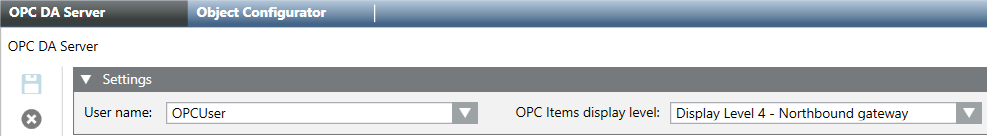

Configure the OPC DA Server
- Select Project > Management System > Servers > Main Server.
- In the System Management tab, click New
 and select New OPC Server DA.
and select New OPC Server DA. - In the New Object dialog box, enter a name and description, and click OK.
- The OPC DA server is added to System Browser. Its status is initially
Not Running. - In the OPC DA Server tab, open the Settings expander.

- From the User name drop-down list, select the OPC software user account.
NOTE: The configured OPC DA server will make available the scopes linked to the OPC user group. - (Optional) From the OPC Items display level drop-down list, select the appropriate display level. This selection will affect the OPC items exposed to the third-party OPC clients. For details, see Settings of the OPC DA Server.
- Click Save
 .
.

- In new projects, by default, the display level is set to Display Level 4 – Northbound Gateway.
- In upgraded projects, by default, if the OPC DA server was previously configured, the display level is set to Display Level 2 – Standard Operation; if the OPC DA server was never configured, the display level is set to Display Level 4 – Northbound Gateway.
If you modify the default value, stop and then restart the Desigo CC OPC DA server.